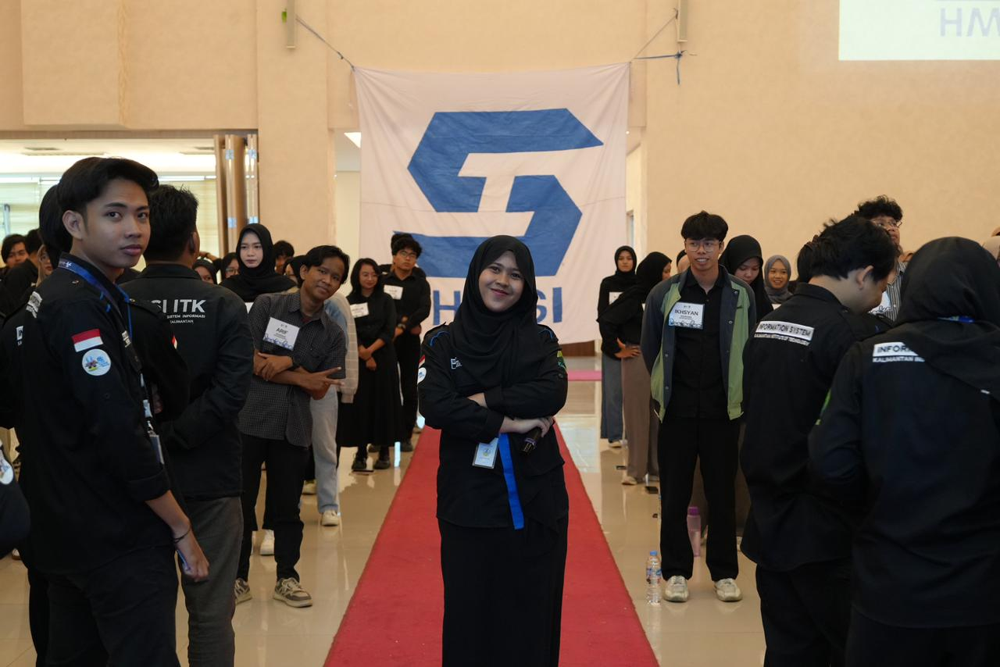
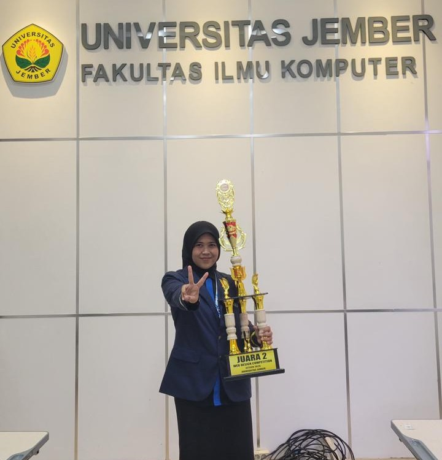
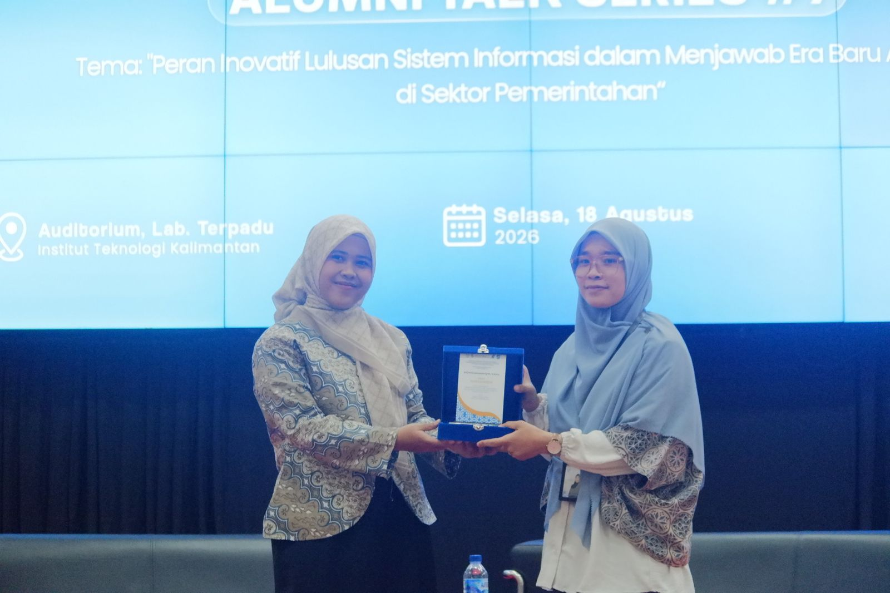

Selamat Datang,
Siti Aminatuzzuhriyah
Menyatukan Data, Manajemen TI, & Desain.
Mahasiswa Sistem Informasi ITK yang merangkai solusi melalui pengembangan web interaktif, tata kelola TI strategis, dan analisis data yang teliti.

Mahasiswa Sistem Informasi ITK yang merangkai solusi melalui pengembangan web interaktif, tata kelola TI strategis, dan analisis data yang teliti.
Senang sekali bisa menyambut kamu di ruang digital kecilku ini! Kalau kamu lagi penasaran gimana caraku menggabungkan dunia data, teknologi, dan sentuhan kreatif, kamu ada di tempat yang pas banget.
Biasanya aku sibuk ngulik kode, merancang tata kelola sistem, atau mikirin strategi seru buat proyek-proyek inovatif. Yuk, gulir terus atau jelajahi menu di atas buat kenalan lebih dekat sama karya dan perjalananku!
Klik foto kartu di bawah untuk membaca kisah lengkapnya

Kabinet Istanava (2024-2025)

Masa Sidang & Wisuda

Mentor Sebaya